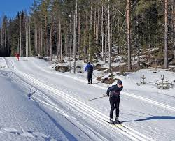

Distanču slēpošana ir ziemas sporta veids, kurā sportisti pārvietojas pa sniegā izveidotu trasi, izmantojot slēpes un nūjas. Šis sporta veids ir populārs valstīs, kurās ziemās veidojas sniega sega. Distanču slēpošanas sacensības var notikt arī telpās, speciāli izveidotos slēpošanas tuneļos.

"karte"